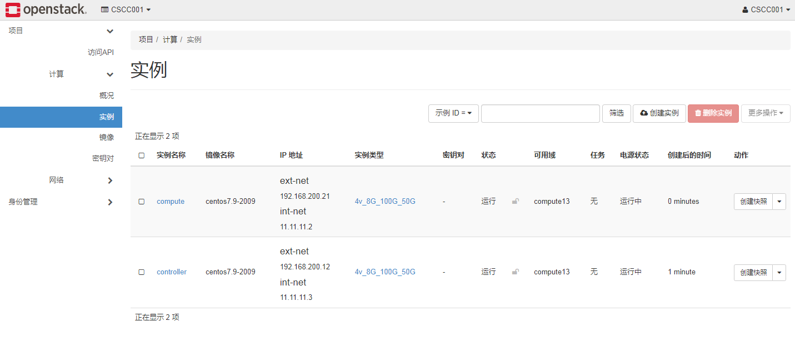
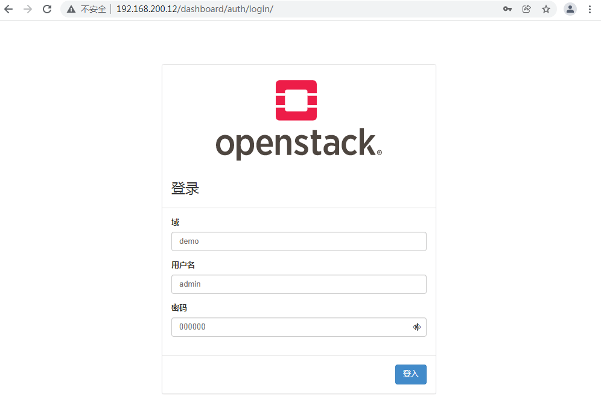
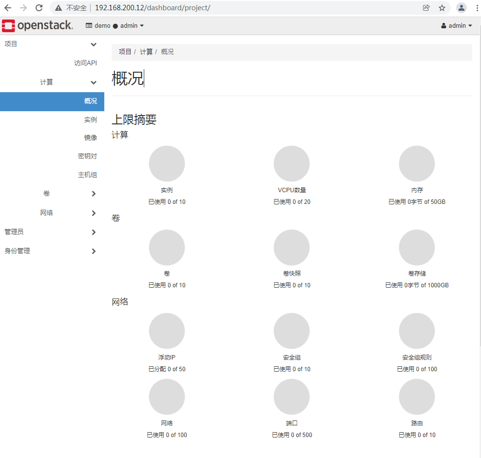
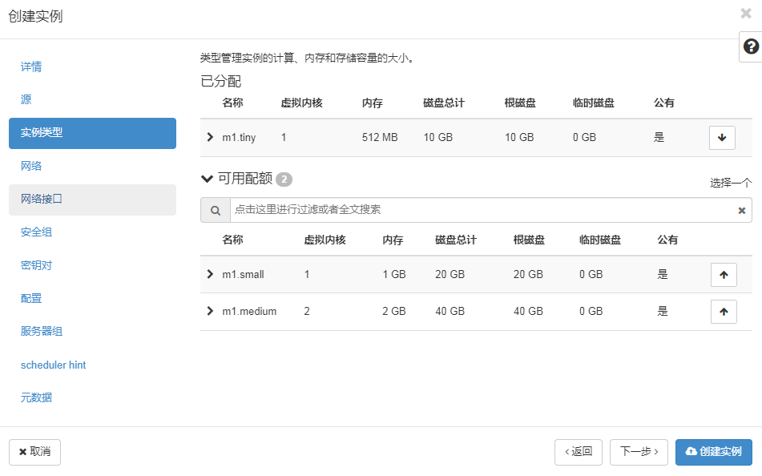
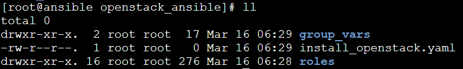
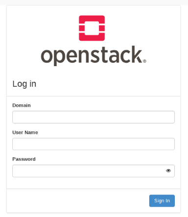

案例描述 本案例是讲述如何使用云主机搭建OpenStack云平台。
使用这种方式，不需要重复安装系统去搭建平台，只需要创建云主机去构建OpenStack云平台，使用云主机去练习相应的操作。
案例一：OpenStack基础平台部署 案例准备 规划节点 节点规划见表1。
表1 节点规划
IP 主机名 节点
192.168.200.12
Controller
控制节点
192.168.200.21
Compute
计算节点
基础准备 在物理服务器上安装好的OpenStack云平台中使用CentOS7.9镜像申请两台云主机，云主机类型为4vcpu、8G内存、100G磁盘及50G临时磁盘；需要给云主机两个网络接口，网络接口1设置为外部网络，作为云主机通信和管理使用，网络接口2设置为内部网络，主要为云主机提供一个网卡设备。创建云主机结果如图1所示。

案例实施 环境配置 （1）配置主机名
使用CRT软件连接controller节点和compute节点，用户名默认为root，密码默认为000000。连接上之后，使用linux命令修改节点主机名。
1 2 3 4 5 6 [root@controller ~]# hostnamectl set-hostname controller [root@controller ~]# hostname controller [root@compute ~]# hostnamectl set-hostname compute [root@compute ~]# hostname compute
修改完成后，使用CRT软件断开重新连接controller节点和compute节点，以生效新主机名。
（2）配置域名解析
使用vi命令在controller节点与compute节点的/etc/hosts文件添加如下内容，添加完成后输入:wq保存文件内容退出。
1 2 3 4 5 6 7 8 9 [root@controller ~]# vi /etc/hosts … 192.168.200.12 controller 192.168.200.21 compute [root@compute ~]# vi /etc/hosts … 192.168.200.12 controller 192.168.200.21 compute
对应的IP地址根据申请的云主机实际IP地址填写。
（3）配置yum环境
将OpenStack云平台部署的iso文件通过SecureCRT上传到controller节点的/root目录下。在/opt目录生成centos7-2009和iaas-train目录，将安装镜像文件内容复制到centos7-2009和iaas目录中。
1 2 3 4 5 6 7 8 9 [root@controller ~]# mkdir /opt/{centos7-2009,iaas} [root@controller ~]# mount /root/CentOS-7-x86_64-DVD-2009.iso /mnt/ mount: /dev/loop0 is write-protected, mounting read-only [root@controller ~]# cp -r /mnt/* /opt/centos7-2009/ [root@controller ~]# umount /mnt/ [root@controller ~]# mount /root/chinaskills_cloud_iaas_v2.0.1.iso /mnt/ mount: /dev/loop0 is write-protected, mounting read-only [root@controller ~]# cp -r /mnt/* /opt/iaas/ [root@controller ~]# umount /mnt/
配置controller节点yum安装源文件yum.repo，指向本地文件目录路径。
1 2 3 4 5 6 7 8 9 10 11 12 13 14 15 16 17 18 19 [root@controller ~]# mv /etc/yum.repos.d/* /media/ [root@controller ~]# cat /etc/yum.repos.d/yum.repo [centos] name=centos7-2009 baseurl=file:///opt/centos7-2009 gpgcheck=0 enabled=1 [openstack] name=openstack-train baseurl=file:///opt/iaas/iaas-repo gpgcheck=0 enabled=1 EOF [root@controller ~]# yum clean all && yum repolist … repo id repo name status centos centos7-2009 4,070 openstack openstack-train 953 repolist: 5,023
在controller节点使用yum安装vsftpd服务，并将/opt目录下的文件共享出去。
1 2 3 4 5 6 7 8 [root@controller ~]# yum install -y vsftpd … Installed: vsftpd.x86_64 0:3.0.2-28.el7 Complete! [root@controller ~]# echo "anon_root=/opt" >> /etc/vsftpd/vsftpd.conf [root@controller ~]# systemctl start vsftpd [root@controller ~]# systemctl enable vsftpd
配置compute节点yum安装源文件yum.repo，指向controller节点的共享文件目录路径。
1 2 3 4 5 6 7 8 9 10 11 12 13 14 15 16 17 18 19 [root@compute ~]# mv /etc/yum.repos.d/* /media/ [root@compute ~]# cat /etc/yum.repos.d/yum.repo [centos] name=centos7-2009 baseurl=ftp://controller/centos7-2009 gpgcheck=0 enabled=1 [openstack] name=openstack-train baseurl=ftp://controller/iaas/iaas-repo gpgcheck=0 enabled=1 EOF [root@compute ~]# yum clean all && yum repolist … repo id repo name status centos centos7-2009 4,070 openstack openstack-train 953 repolist: 5,023
（4）划分分区
在compute节点上的临时磁盘vdb中划分两个20G的分区。
1 2 3 4 5 6 7 8 9 10 11 12 13 14 15 16 17 18 19 20 21 22 23 24 25 26 27 28 29 30 31 32 33 34 35 36 37 38 39 40 41 42 43 44 45 46 47 48 [root@compute ~]# lsblk NAME MAJ:MIN RM SIZE RO TYPE MOUNTPOINT vda 253:0 0 100G 0 disk └─vda1 253:1 0 100G 0 part / vdb 253:16 0 50G 0 disk /mnt [root@compute ~]# umount /mnt/ [root@compute ~]# fdisk /dev/vdb Welcome to fdisk (util-linux 2.23.2). Changes will remain in memory only, until you decide to write them. Be careful before using the write command. Command (m for help): n Partition type: p primary (0 primary, 0 extended, 4 free) e extended Select (default p): Using default response p Partition number (1-4, default 1): First sector (2048-104857599, default 2048): Using default value 2048 Last sector, +sectors or +size{K,M,G} (2048-104857599, default 104857599): +20G Partition 1 of type Linux and of size 20 GiB is set Command (m for help): n Partition type: p primary (1 primary, 0 extended, 3 free) e extended Select (default p): Using default response p Partition number (2-4, default 2): First sector (41945088-104857599, default 41945088): Using default value 41945088 Last sector, +sectors or +size{K,M,G} (41945088-104857599, default 104857599): +20G Partition 2 of type Linux and of size 20 GiB is set Command (m for help): wq The partition table has been altered! Calling ioctl() to re-read partition table. Syncing disks. [root@compute ~]# lsblk NAME MAJ:MIN RM SIZE RO TYPE MOUNTPOINT vda 253:0 0 100G 0 disk └─vda1 253:1 0 100G 0 part / vdb 253:16 0 50G 0 disk ├─vdb1 253:17 0 20G 0 part └─vdb2 253:18 0 20G 0 part
OpenStack云平台部署 完成基础环境部署后，就可以开始部署安装OpenStack云平台。
（1）配置环境变量
在controller节点和compute节点安装OpenStack云平台的安装脚本软件包。
1 2 3 4 5 6 7 8 9 10 11 [root@controller ~]# yum install -y openstack-iaas … Installed: openstack-train.x86_64 0:v1.0.2-1.el7 Complete! [root@compute ~]# yum install -y openstack-iaas … Installed: openstack-train.x86_64 0:v1.0.2-1.el7 Complete!
在controller节点和compute节点配置环境变量文件/etc/openstack/openrc.sh，按“i”建进入编辑模式进行配置，配置完按ESC键输入:
删除每行前1个字符，再按ESC键输入:wq保存退出，内容如下所示。
1 2 3 4 5 6 7 8 9 10 11 12 13 14 15 16 17 18 19 20 21 22 23 24 25 26 27 28 29 30 31 32 33 34 35 [root@controller ~]# vi /etc/openstack/openrc.sh # 修改以下内容 HOST_IP=192.168.200.12 HOST_PASS=000000 #controller节点root用户密码 HOST_NAME=controller HOST_IP_NODE=192.168.200.21 HOST_PASS_NODE=000000 #compute节点root用户密码 HOST_NAME_NODE=compute network_segment_IP=192.168.200.0/24 RABBIT_USER=openstack RABBIT_PASS=000000 DB_PASS=000000 DOMAIN_NAME=demo ADMIN_PASS=000000 DEMO_PASS=000000 KEYSTONE_DBPASS=000000 GLANCE_DBPASS=000000 GLANCE_PASS=000000 PLACEMENT_DBPASS=000000 PLACEMENT_PASS=000000 NOVA_DBPASS=000000 NOVA_PASS=000000 NEUTRON_DBPASS=000000 NEUTRON_PASS=000000 METADATA_SECRET=000000 INTERFACE_NAME=eth1 #云主机第二张网卡名称 Physical_NAME=provider minvlan=1 maxvlan=1000 CINDER_DBPASS=000000 CINDER_PASS=000000 BLOCK_DISK=vdb1 #compute节点第一个分区名称 SWIFT_PASS=000000 OBJECT_DISK=vdb2 #compute节点第二个分区名称 STORAGE_LOCAL_NET_IP=192.168.200.21
（2）部署OpenStack云平台基础环境
在controller节点和compute节点都执行脚本iaas-pre-host.sh部署OpenStack云平台基础环境。完成后使用reboot命令重启虚拟机以生效配置。
1 2 [root@controller ~]# iaas-pre-host.sh [root@compute ~]# iaas-pre-host.sh
（3）部署mariadb数据库及rabbit消息队列服务
在controller节点执行脚本部署mariadb数据库及rabbit消息队列服务。
1 [root@controller ~]# iaas-install-mysql.sh
（4）部署keystone服务
在controller节点执行脚本部署keystone服务。
1 [root@controller ~]# iaas-install-keystone.sh
（5）部署glance服务
在controller节点执行脚本部署glance服务。
1 [root@controller ~]# iaas-install-glance.sh
（6）部署nova服务
在controller节点执行脚本部署nova组件的控制服务。
1 2 [root@controller ~]# iaas-install-placement.sh [root@controller ~]# iaas-install-nova-controller.sh
执行完上面的脚本后，在compute节点执行脚本部署nova组件的计算服务，这样就将compute节点的cpu、内存及磁盘资源添加到OpenStack云平台的资源池中了。
1 [root@compute ~]# iaas-install-nova-compute.sh
（7）部署neutron服务
在controller节点执行脚本部署neutron组件的控制服务。
1 [root@controller ~]# iaas-install-neutron-controller.sh
在compute节点执行脚本部署neutron组件的计算服务。
1 [root@compute ~]# iaas-install-neutron-compute.sh
（8）部署dashboard服务
在controller节点执行脚本部署dashboard组件服务。
1 [root@controller ~]# iaas-install-dashboard.sh
安装完成后，使用google浏览器访问OpenStack云平台，访问地址为：http://192.168.100.10/dashboard，domain为demo，用户名为admin，密码为000000。结果如图2和图3所示。

图2 OpenStack云平台dashboard访问1

图3 OpenStack云平台dashboard访问2
（9）部署cinder服务
在controller节点执行脚本部署cinder组件的控制服务。
1 [root@controller ~]# iaas-install-cinder-controller.sh
controller节点脚本执行完成后，在compute节点执行脚本部署cinder组件的计算服务。
1 [root@compute ~]# iaas-install-cinder-compute.sh
（10）部署swift服务
在controller节点执行脚本部署swift组件的控制服务。
1 [root@controller ~]# iaas-install-swift-controller.sh
controller节点脚本执行完成后，在compute节点执行脚本部署swift组件的计算服务。
1 [root@compute ~]# iaas-install-swift-compute.sh
创建cirros云主机 （1）上传镜像
在controller节点使用OpenStack相关命令上传cirros镜像。
1 2 3 4 5 6 7 8 9 10 11 12 13 14 15 16 17 18 19 20 21 22 23 24 25 26 [root@controller ~]# source /etc/keystone/admin-openrc.sh [root@controller ~]# glance image-create --name cirros --disk-format qcow2 --container-format bare < /opt/iaas/images/cirros-0.3.4-x86_64-disk.img +------------------+--------------------------------------------------------------------+ | Property | Value | +------------------+--------------------------------------------------------------------+ | checksum | ee1eca47dc88f4879d8a229cc70a07c6 | | container_format | bare | | created_at | 2022-02-16T02:58:23Z | | disk_format | qcow2 | | id | 76ce1b38-b1fa-465c-947f-288ea4760761 | | min_disk | 0 | | min_ram | 0 | | name | cirros | | os_hash_algo | sha512 | | os_hash_value |1b03ca1bc3fafe448b90583c12f367949f8b0e665685979d95b004e48574b953316 | | |799e23240f4f739d1b5eb4c4ca24d38fdc6f4f9d8247a2bc64db25d6bbdb2 | | os_hidden | False | | owner | 1ac0739939db4dc78bf42802ba0205e9 | | protected | False | | size | 13287936 | | status | active | | tags | [] | | updated_at | 2022-02-16T02:58:24Z | | virtual_size | Not available | | visibility | shared | +------------------+--------------------------------------------------------------------+
（2）创建网络
在controller节点使用OpenStack相关命令创建一个net网络。
1 2 3 [root@controller ~]# source /etc/keystone/admin-openrc.sh [root@controller ~]# openstack network create net [root@controller ~]# openstack subnet create --network net --subnet-range 10.0.0.0/24 --gateway 10.0.0.1 subnet
（3）创建云主机
登录dashboard页面，在左侧菜单栏中选择“项目”-“计算”-“实例”，点击“创建实例”，输入实例名称cirros，默认可用域为nova，数量为1，点击下一步；选择已共享的cirros镜像，选择不创建新卷，点击下一步；选择
m1.tiny实例类型，点击下一步；选择net为虚拟机的网络；这样点击“创建实例”按钮就可以完成虚拟机创建。创建步骤如图4、图5、图6、图7所示。
图4 虚拟机创建1
图5 虚拟机创建2

图6 虚拟机创建3
图7 虚拟机创建4
等虚拟机创建完成后，可以看到虚拟机状态为“运行”，如图8所示。只要求创建cirros的云主机不报错，不要求创建后的cirros云主机可以使用CRT连接。
图8 cirros虚拟机运行
案例二：Ansible部署OpenStack平台 案例准备 规划节点 Ansible服务的节点规划，见表2。
表2 规划节点
IP 主机名 节点
172.128.11.33
ansible
Ansible节点
172.128.11.39
controller
Controller控制节点
172.128.11.21
compute
Compute计算节点
172.128.11.22
桌面化测试节点
基础准备 现平台已提供三台云主机进行实验，云主机镜像使用提供的CentOS_7.9.qcow2镜像，云主机类型均为4vcpu、12G内存，40G磁盘+20G临时磁盘，另平台还提供了一台桌面化测试节点，用于访问OpenStack云平台。节点规划表中的IP地址为作者的IP地址，在进行实操案例的时候，按照自己的环境规划网络与IP地址（虚拟机需要使用两块网卡）。Ansible节点安装好Ansible服务。然后做好Ansible节点对Controller和Compute节点的无秘钥访问操作。
案例实施 环境准备 该实战案例为使用Ansible工具部署一个单控制单计算的OpenStack平台。
（1）配置IP并连接
连接三台云主机，并修改主机名分别为ansible、controller、compute。修改完成后刷新页面或者执行bash命令，以生效新主机名。
1 2 3 [root@localhost opt]# hostnamectl set-hostname ansible [root@localhost opt]# hostnamectl set-hostname controller [root@localhost opt]# hostnamectl set-hostname compute
需要使用fdisk /dev/vdb命令在第compute节点进行分区，三个大小为6G的分区。
1 2 3 4 5 6 7 8 9 10 11 [root@compute ~]# fdisk /dev/vdb ... [root@compute ~]# lsblk NAME MAJ:MIN RM SIZE RO TYPE MOUNTPOINT vda 253:0 0 40G 0 disk └─vda1 253:1 0 40G 0 part / vdb 253:16 0 20G 0 disk ├─vdb1 253:17 0 6G 0 part ├─vdb2 253:18 0 6G 0 part └─vdb3 253:19 0 6G 0 part vdc 253:32 0 1M 0 disk
（2）Ansible安装FTP、Ansible服务
在Ansible节点上传 CentOS-7-x86_64-DVD-2009.iso、chinaskills_cloud_iaas_v2.0.1.iso、openstack_ansible_train.tar.gz、ansible.tar.gz软件包，配置本地镜像源，安装Ansible服务。把Ansible节点的防火墙和SELinux关闭。
1 2 3 4 5 6 7 8 9 10 11 12 13 14 15 16 17 18 19 20 21 22 [root@ansible ~]# mkdir /opt/{centos,iaas} [root@ansible ~]# mount -o loop CentOS-7-x86_64-DVD-2009.iso /opt/centos/ [root@ansible ~]# mount -o loop chinaskills_cloud_iaas_v2.0.1.iso /opt/iaas/ [root@ansible ~]# tar -zxvf ansible.tar.gz -C /opt/ [root@ansible ~]# mv /etc/yum.repos.d/* /home/ [root@ansible ~]# vi /etc/yum.repos.d/ansible.repo [ansible] name=ansible baseurl=file:///opt/ansible gpgcheck=0 enabled=1 [centos] name=centos baseurl=file:///opt/centos gpgcheck=0 enabled=1 [root@ansible ~]# yum install vsftpd -y [root@ansible ~]# echo "anon_root=/opt" >> /etc/vsftpd/vsftpd.conf [root@ansible ~]# systemctl disable --now firewalld [root@ansible ~]# systemctl restart vsftpd [root@ansible ~]# setenforce 0 [root@ansible ~]# yum install ansible -y
（3）配置无秘钥登录
配置Ansible节点无秘钥登录Controller和Compute节点。配置完无秘钥登录后，使用Ansible节点SSH连接测试。（若云主机已是无秘钥访问的，则不用配置无秘钥）
1 2 3 4 5 6 7 8 9 10 11 12 13 14 15 16 17 18 19 20 21 22 23 [root@ansible ~]# ssh-keygen Generating public/private rsa key pair. Enter file in which to save the key (/root/.ssh/id_rsa): Enter passphrase (empty for no passphrase): Enter same passphrase again: Your identification has been saved in /root/.ssh/id_rsa. Your public key has been saved in /root/.ssh/id_rsa.pub. The key fingerprint is: SHA256:zOl0NDjrN697yRTmHmLXYpj2n4ijS+yxHUS3OhRG3ew root@ansible The key's randomart image is: +---[RSA 2048]----+ | .. o | | o . o | | o * .. | | o B +o.E | | S +=.o | | = +*.B . | | *o*O + | | o =.**. . | | =o==o.o | +----[SHA256]-----+ [root@ansible ~]# scp -p .ssh/id_rsa.pub 172.128.11.21:/root/.ssh/authorized_keys //输入密码Abc@1234 [root@ansible ~]# scp -p .ssh/id_rsa.pub 172.128.11.20:/root/.ssh/authorized_keys //输入密码Abc@1234
目录结构 （1）项目目录
首先在/opt目录下创建一个项目目录openstack_ansible，命令如下：
1 [root@ansible ~]# mkdir /opt/openstack_ansible
（2）创建角色
在创建roles角色目录之前，考虑将OpenStack云平台的安装步骤拆分为多个roles执行，这样的话，Playbook易于编写和读懂。
安装私有云平台，使用init（基础环境）、mariadb（数据库）、keystone（认证服务）、glance（镜像服务）、placement、nova-controller（计算服务）、nova-compute（计算服务）、neutron-controller（网络服务）、neutron-compute（网络服务）、dashboard（界面服务）、cinder-controller（块存储服务）、cinder-compute（块存储服务）、swift-controller（对象存储服务）、swift-compute（对象存储服务）、heat（编排服务）这些roles来完成。下面创建这些roles和相应的项目目录，具体命令如下：
1 [root@ansible ~]# mkdir -p /opt/openstack_ansible/roles/{init,mariadb,keystone,glance,nova-controller,nova-compute,neutron-controller,neutron-compute,dashboard,cinder-controller,cinder-compute,swift-controller,swift-compute,heat}/{tasks,files,templates,meta,handlers,vars}
在每个角色目录下面都有一样的目录，这些目录中的task目录一般是一定会用到的，其他的目录视情况而定来使用。
（3）创建group_vars目录
在项目目录/opt/openstack_ansible下创建group_vars目录，并在该目录下创建all文件，该目录用来存放变量声明文件all。命令如下：
1 2 3 4 [root@ansible ~]# cd /opt/openstack_ansible/ [root@ansible openstack_ansible]# mkdir group_vars [root@ansible openstack_ansible]# cd group_vars/ [root@ansible group_vars]# touch all
（4）创建安装入口文件
进入/opt/openstack_ansible目录，创建“install_openstack.yaml”文件，该文件是安装动作的入口文件。命令如下：
1 2 3 4 5 6 7 [root@ansible openstack_ansible]#cd /opt/openstack_ansible [root@ansible openstack_ansible]# touch install_openstack.yaml [root@ansible openstack_ansible]# ll total 0 drwxr-xr-x. 2 root root 17 Aug 26 21:31 group_vars -rw-r--r--. 1 root root 0 Aug 26 21:33 install_openstack.yaml drwxr-xr-x. 10 root root 114 Aug 26 21:18 roles
到目前为止，ansible的目录结构与文件创建完毕。接下来对每一个role角色进行剧本的编写。
编写Playbook剧本 配置完成后，如图9所示：

图9 配置完成结果
（1）init角色
该角色执行的任务是用来部署Controller节点和Compute的基础环境，包括配置Yum源，安装iaas-xiandian脚本，安装iaas-pre-host脚本。在roles/init/tasks目录下，创建main.yaml文件，按“i”建进入编辑模式进行配置，按ESC键输入:wq保存退出，文件的内容如下：
1 2 3 4 5 6 7 8 9 10 11 [root@ansible ~]# vi /opt/openstack_ansible/roles/init/tasks/main.yaml - name: move repos shell: mv /etc/yum.repos.d/* /media - name: create local.repo copy: src=local.repo dest=/etc/yum.repos.d/ - name: install openstack-iaas yum: name=openstack-iaas state=present - name: openrc.sh template: src=openrc.sh.j2 dest=/etc/openstack/openrc.sh - name: install pre-host shell: iaas-pre-host.sh
该剧本用到了copy和template模块，copy模块使用的文件及镜像包，放入tasks同级目录的files目录下；template模块使用的Jinja2文件，放入tasks同级目录的templates目录下。
在该init角色剧本中，创建local.repo文件到init/files目录下，创建openrc.sh.j2文件至init/templates目录下。下面贴出local.repo和host.j2的文件内容：
local.repo内容：
1 2 3 4 5 6 7 8 9 10 11 [root@ansible opt]# vi /opt/openstack_ansible/roles/init/files/local.repo [centos] name=centos baseurl=ftp://172.128.11.33/centos gpgcheck=0 enabled=1 [iaas] name=iaas baseurl=ftp://172.128.11.33/iaas/iaas-repo gpgcheck=0 enabled=1
openrc.sh.j2内容如下：
1 2 3 4 5 6 7 8 9 10 11 12 13 14 15 16 17 18 19 20 21 22 23 24 25 26 27 28 29 30 31 32 33 34 35 36 37 38 39 40 41 42 43 44 45 46 47 48 49 50 51 52 53 54 55 56 57 58 59 60 61 62 63 64 65 66 67 68 69 70 71 72 73 74 75 76 77 78 79 80 81 82 83 84 85 86 87 88 89 90 91 92 93 94 95 96 97 98 99 100 101 102 103 104 105 106 107 108 109 110 111 112 113 114 115 116 117 118 119 120 121 122 123 124 125 126 127 128 129 130 131 132 133 134 135 136 137 138 139 140 141 142 143 144 145 146 147 148 149 150 151 152 153 154 155 156 157 158 159 160 161 162 163 164 165 166 167 168 169 170 171 172 173 174 175 [root@ansible opt]# vi /opt/openstack_ansible/roles/init/templates/openrc.sh.j2 # --------------------system Config-------------------- # Controller Server Manager IP. example:x.x.x.x HOST_IP={{controller_ip}} # Controller HOST Password. example:000000 HOST_PASS={{PASSWD}} # Controller Server hostname. example:controller HOST_NAME={{controller_name}} # Compute Node Manager IP. example:x.x.x.x HOST_IP_NODE={{compute_ip}} # Compute HOST Password. example:000000 HOST_PASS_NODE={{PASSWD}} # Compute Node hostname. example:compute HOST_NAME_NODE={{compute_name}} # --------------------Chrony Config------------------- # Controller network segment IP. example:x.x.0.0/16(x.x.x.0/24) network_segment_IP={{network_segment_IP}}/24 # --------------------Rabbit Config ------------------ # user for rabbit. example:openstack RABBIT_USER=openstack # Password for rabbit user .example:000000 RABBIT_PASS={{PASSWD}} # --------------------MySQL Config--------------------- # Password for MySQL root user . exmaple:000000 DB_PASS={{PASSWD}} # --------------------Keystone Config------------------ # Password for Keystore admin user. exmaple:000000 DOMAIN_NAME=demo ADMIN_PASS={{PASSWD}} DEMO_PASS={{PASSWD}} # Password for Mysql keystore user. exmaple:000000 KEYSTONE_DBPASS={{PASSWD}} # --------------------Glance Config-------------------- # Password for Mysql glance user. exmaple:000000 GLANCE_DBPASS={{PASSWD}} # Password for Keystore glance user. exmaple:000000 GLANCE_PASS={{PASSWD}} # --------------------Placement Config---------------------- # Password for Mysql placement user. exmaple:000000 PLACEMENT_DBPASS={{PASSWD}} # Password for Keystore placement user. exmaple:000000 PLACEMENT_PASS={{PASSWD}} # --------------------Nova Config---------------------- # Password for Mysql nova user. exmaple:000000 NOVA_DBPASS={{PASSWD}} # Password for Keystore nova user. exmaple:000000 NOVA_PASS={{PASSWD}} # --------------------Neutron Config------------------- # Password for Mysql neutron user. exmaple:000000 NEUTRON_DBPASS={{PASSWD}} # Password for Keystore neutron user. exmaple:000000 NEUTRON_PASS={{PASSWD}} # metadata secret for neutron. exmaple:000000 METADATA_SECRET={{PASSWD}} # External Network Interface. example:eth1 INTERFACE_NAME={{External_Network}} # External Network The Physical Adapter. example:provider Physical_NAME={{Physical_NAME}} # First Vlan ID in VLAN RANGE for VLAN Network. exmaple:101 minvlan=1 # Last Vlan ID in VLAN RANGE for VLAN Network. example:200 maxvlan=1000 # --------------------Cinder Config-------------------- # Password for Mysql cinder user. exmaple:000000 CINDER_DBPASS={{PASSWD}} # Password for Keystore cinder user. exmaple:000000 CINDER_PASS={{PASSWD}} # Cinder Block Disk. example:md126p3 BLOCK_DISK={{cinder_disk}} # --------------------Swift Config--------------------- # Password for Keystore swift user. exmaple:000000 SWIFT_PASS={{PASSWD}} # The NODE Object Disk for Swift. example:md126p4. OBJECT_DISK={{swift_disk}} # The NODE IP for Swift Storage Network. example:x.x.x.x. STORAGE_LOCAL_NET_IP={{STORAGE_LOCAL_NET_IP}} # --------------------Trove Config---------------------- # Password for Mysql trove user. exmaple:000000 TROVE_DBPASS={{PASSWD}} # Password for Keystore trove user. exmaple:000000 TROVE_PASS={{PASSWD}} # --------------------Heat Config---------------------- # Password for Mysql heat user. exmaple:000000 HEAT_DBPASS={{PASSWD}} # Password for Keystore heat user. exmaple:000000 HEAT_PASS={{PASSWD}} # --------------------Ceilometer Config---------------- # Password for Gnocchi ceilometer user. exmaple:000000 CEILOMETER_DBPASS={{PASSWD}} # Password for Keystore ceilometer user. exmaple:000000 CEILOMETER_PASS={{PASSWD}} # --------------------AODH Config---------------- # Password for Mysql AODH user. exmaple:000000 AODH_DBPASS={{PASSWD}} # Password for Keystore AODH user. exmaple:000000 AODH_PASS={{PASSWD}} # --------------------ZUN Config---------------- # Password for Mysql ZUN user. exmaple:000000 ZUN_DBPASS={{PASSWD}} # Password for Keystore ZUN user. exmaple:000000 ZUN_PASS={{PASSWD}} # Password for Keystore KURYR user. exmaple:000000 KURYR_PASS={{PASSWD}} # --------------------OCTAVIA Config---------------- # Password for Mysql OCTAVIA user. exmaple:000000 OCTAVIA_DBPASS={{PASSWD}} # Password for Keystore OCTAVIA user. exmaple:000000 OCTAVIA_PASS={{PASSWD}} # --------------------Manila Config---------------- # Password for Mysql Manila user. exmaple:000000 MANILA_DBPASS={{PASSWD}} # Password for Keystore Manila user. exmaple:000000 MANILA_PASS={{PASSWD}} # The NODE Object Disk for Manila. example:md126p5. SHARE_DISK={{manila_disk}} # --------------------Cloudkitty Config---------------- # Password for Mysql Cloudkitty user. exmaple:000000 CLOUDKITTY_DBPASS={{PASSWD}} # Password for Keystore Cloudkitty user. exmaple:000000 CLOUDKITTY_PASS={{PASSWD}} # --------------------Barbican Config---------------- # Password for Mysql Barbican user. exmaple:000000 BARBICAN_DBPASS={{PASSWD}} # Password for Keystore Barbican user. exmaple:000000 BARBICAN_PASS={{PASSWD}}
因为设置的变量，所以需要在/opt/openstack_ansible/group_vars/all中声明变量，all文件内容如下：
1 2 3 4 5 6 7 8 9 10 11 12 13 [root@ansible opt]# vi /opt/openstack_ansible/group_vars/all controller_ip: 172.128.11.21 controller_name: controller compute_ip: 172.128.11.20 compute_name: compute PASSWD: 'Abc@1234' cinder_disk: vdb1 swift_disk: vdb2 manila_disk: vdb3 network_segment_IP: 172.128.11.0 External_Network: eth1 Physical_NAME: provider STORAGE_LOCAL_NET_IP: 172.128.11.20
至此，init角色剧本编写完成。
（2）其他角色
其他角色的作用是执行安装OpenStack的脚本，可以自行参考提供的案例文档，其他main.yaml文件可使用提供的软件包openstack_ansible_train.tar.gz，替换之后需要更改以下文件：
1 2 3 4 5 6 7 8 9 10 11 12 13 14 15 16 17 18 19 20 21 22 23 24 25 26 27 28 29 30 31 32 33 34 35 36 37 38 39 40 41 42 43 44 45 46 47 48 49 50 51 52 53 54 55 56 57 58 [root@ansible openstack_ansible]# tar -zxvf /root/openstack_ansible_train.tar.gz -C /root/ [root@ansible openstack_ansible]# cp -rvf /root/openstack_ansible_train/* /opt/openstack_ansible/ cp: overwrite ‘/opt/openstack_ansible/group_vars/all’? n cp: overwrite ‘/opt/openstack_ansible/install_openstack.yaml’? n ‘/root/openstack_ansible_train/roles/cinder-compute/tasks/main.yaml’ -> ‘/opt/openstack_ansible/roles/cinder-compute/tasks/main.yaml’ ‘/root/openstack_ansible_train/roles/cinder-controller/tasks/main.yaml’ -> ‘/opt/openstack_ansible/roles/cinder-controller/tasks/main.yaml’ ‘/root/openstack_ansible_train/roles/dashboard/tasks/main.yaml’ -> ‘/opt /openstack_ansible/roles/dashboard/tasks/main.yaml’ ‘/root/openstack_ansible_train/roles/glance/tasks/main.yaml’ -> ‘/opt/op enstack_ansible/roles/glance/tasks/main.yaml’ ‘/root/openstack_ansible_train/roles/heat/tasks/main.yaml’ -> ‘/opt/open stack_ansible/roles/heat/tasks/main.yaml’ cp: overwrite ‘/opt/openstack_ansible/roles/init/files/local.repo’? n cp: overwrite ‘/opt/openstack_ansible/roles/init/tasks/main.yaml’? n cp: overwrite ‘/opt/openstack_ansible/roles/init/templates/openrc.sh.j2’ ? n ‘/root/openstack_ansible_train/roles/keystone/tasks/main.yaml’ -> ‘/opt/ openstack_ansible/roles/keystone/tasks/main.yaml’ ‘/root/openstack_ansible_train/roles/mariadb/tasks/main.yaml’ -> ‘/opt/o penstack_ansible/roles/mariadb/tasks/main.yaml’ ‘/root/openstack_ansible_train/roles/neutron-compute/tasks/main.yaml’ -> ‘/opt/openstack_ansible/roles/neutron-compute/tasks/main.yaml’ ‘/root/openstack_ansible_train/roles/neutron-controller/tasks/main.yaml’ -> ‘/opt/openstack_ansible/roles/neutron-controller/tasks/main.yaml’ ‘/root/openstack_ansible_train/roles/nova-compute/tasks/main.yaml’ -> ‘/ opt/openstack_ansible/roles/nova-compute/tasks/main.yaml’ ‘/root/openstack_ansible_train/roles/nova-controller/tasks/main.yaml’ -> ‘/opt/openstack_ansible/roles/nova-controller/tasks/main.yaml’ ‘/root/openstack_ansible_train/roles/swift-compute/tasks/main.yaml’ -> ‘ /opt/openstack_ansible/roles/swift-compute/tasks/main.yaml’ ‘/root/openstack_ansible_train/roles/swift-controller/tasks/main.yaml’ - > ‘/opt/openstack_ansible/roles/swift-controller/tasks/main.yaml’ [root@ansible opt]# cat /opt/openstack_ansible/roles/init/files/local.repo [centos] name=centos baseurl=ftp://172.128.11.33/centos gpgcheck=0 enabled=1 [iaas] name=iaas baseurl=ftp://172.128.11.33/iaas/iaas-repo gpgcheck=0 enabled=1 [root@ansible opt]# cat /opt/openstack_ansible/group_vars/all controller_ip: 172.128.11.21 controller_name: controller compute_ip: 172.128.11.20 compute_name: compute PASSWD: 'Abc@1234' cinder_disk: vdb1 swift_disk: vdb2 manila_disk: vdb3 network_segment_IP: 172.128.11.0 External_Network: eth1 Physical_NAME: provider STORAGE_LOCAL_NET_IP: 172.128.11.20
执行Playbook 在执行剧本之前，还有一些工作需要完成，具体任务如下：
（1）修改hosts文件
此处需要修改的hosts文件并不只是/etc/hosts，还有一个/etc/ansible/hosts文件，编辑/etc/ansible/hosts，在文件的最后添加需要执行剧本的目标主机组，添加的内容如下：
1 2 3 4 5 6 [root@ansible ~]# vi /etc/ansible/hosts # [controller] 172.128.11.21 [compute] 172.128.11.20
编辑/etc/hosts文件，添加IP与主机名的映射，如下所示：
1 2 3 [root@ansible ~]# vi /etc/hosts 172.128.11.21controller 172.128.11.20 compute
（2）编辑剧本入口文件
install_openstack.yaml文件为执行剧本的入口文件，需要将调用roles的顺序及哪些主机调用哪些roles在这个文件中体现出来，install_openstack.yaml文件的具体内容如下（如果以选择替换软件包里的内容无需修改一下内容）：
1 2 3 4 5 6 7 8 9 10 11 12 13 14 15 16 17 18 19 20 21 22 23 24 25 26 27 [root@ansible ~]# vi /opt/openstack_ansible/install_openstack.yaml ┅ \\三短横请手打 - hosts: controller remote_user: root roles: - init - mariadb - keystone - glance - nova-controller - neutron-controller - dashboard - cinder-controller - swift-controller - heat - hosts: compute remote_user: root roles: - init - nova-compute - neutron-compute - cinder-compute - swift-compute
（3）执行剧本
当所有准备工作都完成之后，使用ansible-playbook命令执行剧本，首先使用–syntax-check参数检测脚本的语法，命令如下：
1 2 [root@ansible opestack_ansible]# ansible-playbook install_openstack.yaml --syntax-check playbook: install_openstack.yaml
直接返回文件名，表示脚本没有语法错误。执行剧本，命令如下（注意需要写完所有main.yaml文件才会完整安装）：
1 2 3 4 5 6 7 [root@ansible openstack_ansible]# ansible-playbook install_openstack.yaml PLAY RECAP **************************************************************************************************************************************** 172.128.11.21 : ok=10 changed=9 unreachable=0 failed=0 skipped=0 rescued=0 ignored=0 172.128.11.39 : ok=16 changed=14 unreachable=0 failed=0 skipped=0 rescued=0 ignored=0 ... ...
在等待一段时间之后，剧本执行完毕，若没有报错，访问Controller节点的IP地址/dashboard，可以访问OpenStack界面。访问OpenStack界面如图10所示：

图10 OpenStack登录界面
至此，使用Ansible一键部署OpenStack完成。关于更多组件的安装，用户可以自行编写role执行安装。